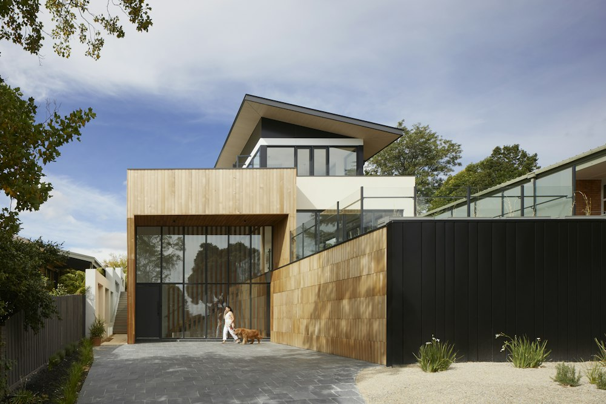

كيف تختار العقار المناسب لاحتياجاتك؟ الدليل الشامل لعام 2026
أهم المعايير الهندسية والمالية التي تضمن لك مقارنة حقيقية بين الموقع، مساحة الوحدة الصافية، جودة التشطيب، وخطة السداد قبل التعاقد.
نصائح من واقع الخبرة الميدانية، تحليلات معمقة لاتجاهات السوق العقاري، وأدلة إرشادية تساعدك على اتخاذ قرار استثماري وسكني واثق ومدروس.
أهم المعايير الهندسية والمالية التي تضمن لك مقارنة حقيقية بين الموقع، مساحة الوحدة الصافية، جودة التشطيب، وخطة السداد قبل التعاقد.

كيف يؤثر القرب من المحاور الرئيسية والخدمات الحيوية على سرعة نمو رأس المال وزيادة القيمة الإيجارية لوحدتك مستقبلاً.
اقرأ المقال ←
قائمة مراجعة عملية لاختبار جودة العزل، تمديدات الكهرباء والسباكة، والتأكد من مطابقة المواصفات قبل الاستلام النهائي.
اقرأ المقال ←
تحليل مقارن للأسعار ومتوسط العائد وتطور الخدمات والبنية التحتية لمساعدتك في حسم وجهتك المقبلة.
اقرأ المقال ←
استغلال المساحات المفتوحة، وتنسيق الإضاءة المخفية، واختيار الخامات الطبيعية لتحقيق أعلى درجات الأناقة والراحة.
اقرأ المقال ←